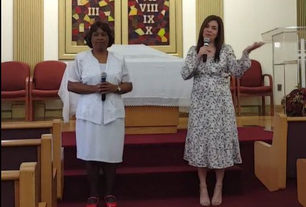

Boletín de la Iglesia
Orden Plataforma
Culto de Adoración
Sábado 23 de Abril 2022
Nos visita: Iglesia Tampa NorteBIENVENIDOS HERMANOS
 10:50 himnos
10:50 himnos 11:00 Anuncios: Pr. Reynaldo Ojeda
Bienvenida: Kendry Domínguez
Diezmos, ofrendas y oración
Llamado a Adoración: José Acosta
Ofrenda Musical: Kendry Domínguez
Título: "Alabadle"
Congregación: "Tu Presencia"
Grupo de Alabanzas
Invocación: Pastor Rubén Torres
Grupo Alabanzas Tampa Norte
1. Hay un lugar
2. Ven Señor
3. Qué me puede dar Perdón?
4. Tu fidelidad
5. El Espíritu de Dios
Parte Especial: Dariel Ruíz
Sermón: "Sígueme"
Texto: Mateo 9:9
Predica: Pastor: Torres
Alabanza: José Acosta
Oración: Pastor Torres
Salida Organizada diaconado

Nuestra meta
Conocer a Jesús y compartirlo
Aprender de él e imitarlo
Hasta que él venga

Nuestra otra Iglesia
Emmanuel Clearwater Spanish
2855 Haines Bayshore Rd
Clearwater Fl 33760